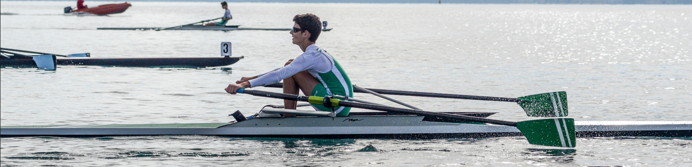

Aviron
Saisons 2016-2020
J'ai commencé l'aviron en 2016 au
Club des Sports d'Annecy le Vieux
Durant 4 saisons d'apprentissage, j'ai pu développer de la rigueur, du geste ainsi que du renfort physique.
J'ai participé à des compétitions régionales et aux championnats nationaux, en faisant des résultats plus ou moins bons

De plus, suite à une blessure je n'ai pas pu participer au championnat de France 2020.
J'ai longuement réfléchi à continuer l'aviron pour la saison 2020-2021.
J'avais l'impression de me trouver dans une "impasse" :
Soit je continuais à m'entrainer sans vraiment de motivation, soit je décidais de changer de club afin d'intégrer un groupe de rameurs
Durant la fin de l'été 2020 , un projet de faire un équipage avec deux rameurs du Cercle Nautique d'Annecy ainsi qu'un rameur du Aviron Sevrier Lac d'Annecy est né.
Après une mûre réflexion j'ai décidé de participer à ce projet, et donc de changer de club
Saison 2020-2021

J'ai intégré le Cercle Nautique d'Annecy en septembre 2020
et commencé les entrainements avec mes nouveaux coéquipiers
Durant une saison encore compliquée à cause de la crise sanitaire, des moments de doute et beaucoup d'entraînements,nous avons participé aux championnats de France qui étaient organisés
à Mantes-la-Jolie.
Le 26 septembre 2021, nous avons décroché le titre de
"Vice-Champions de France en Quatre sans barreur J18"
Deux semaines après, j'ai participé à la Coupe Auvergne Rhône-Alpes à Aiguebelette où nous avons gagné
la médaille d'or en "Quatre sans barreur J18 " et la médaille d'argent en "Deux sans barreur J18 "
Saison 2021-2022
Pour commencer cette saison, le 3 décembre 2021,
j'ai participé avec mon équipage et des filles du club, au
"24 Heures Annecy Indoor" dont le but était de parcourir un maximum de kilomètres au rameur afin de récolter des dons pour le Téléthon France.
L'événement a été organisé par le Cercle Nautique d'Annecy
Nous étions en relais à 9, et nous avons parcouru 363,722km
Cette performance nous a permis de décrocher le
Record de France en
"24h Aviron Indoor en équipe SMALL 15-18 ans"
METTRE IMAGE RECORD FRANCE
Pour la suite de la saison,
nous avons l'objectif de faire la meilleure place possible aux "Championnat de France Bateaux Courts J18" à Cazaubon, afin de prétendre à une qualification en équipe régionale ou nationale.
Pour clôturer mes années Juniors, avec mes coéquipiers, nous voulons décrocher le titre de
"Champions de France en Quatre sans barreur J18"